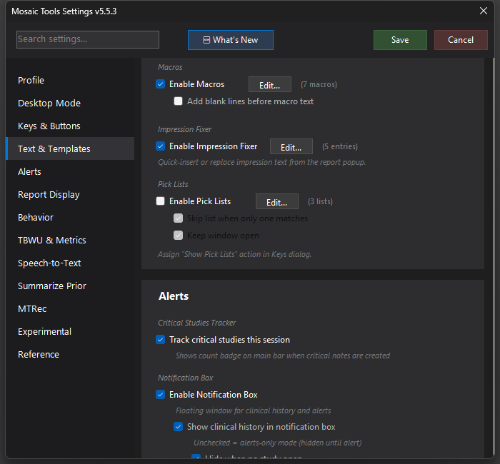

Impression Fixer
One-click buttons that insert or replace impression text — your standard closers and disclaimers applied from the report popup (or directly inside the Mosaic editor) without dictating them.

What it does
Shows quick-action buttons next to the IMPRESSION line after you process a report. Each button is one of your configured entries and either inserts its text into the impression or replaces the impression with it — for the boilerplate you'd otherwise dictate or type on half your studies ("No acute intracranial abnormality.", comparison-limited disclaimers, follow-up lines).
How to turn it on / set it up
- Check Enable Impression Fixer in Settings → Text & Templates → Impression Fixer.
- Click Edit... to manage entries. Each entry has:
- A blurb (the button label) and the text to apply.
- Insert vs Replace mode.
- Match criteria (required / any-of / exclude terms against the study description) so buttons only appear where they make sense.
- An optional comparison requirement with a max-age-in-weeks — e.g. only offer a "stable compared to prior" entry when a recent comparison actually exists.
- Optional: check Impression fixer buttons in editor (Settings → Experimental, under Mosaic CDP) to also render the buttons directly in the Mosaic report editor next to IMPRESSION. Requires CDP to be enabled.
Using it
After Process Report, the matching buttons appear on the report popup's IMPRESSION line (and in the editor itself if the CDP option is on). Click one; the text is applied to the impression immediately.
Tips & gotchas
- Replace mode overwrites the whole impression — best kept for normal-study closers where that's exactly what you want.
- Criteria keep the button row short; an entry with no criteria shows on every study.
- The in-editor buttons need Use CDP for Mosaic interaction enabled; the report-popup buttons work without CDP.